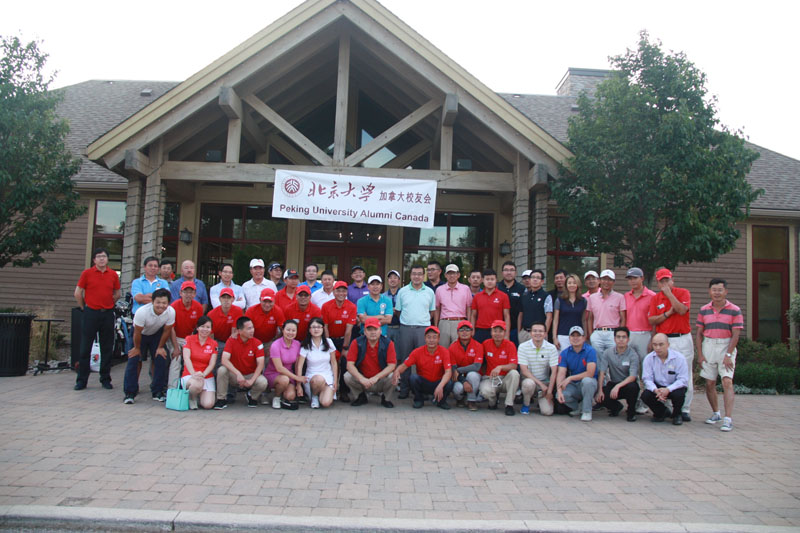
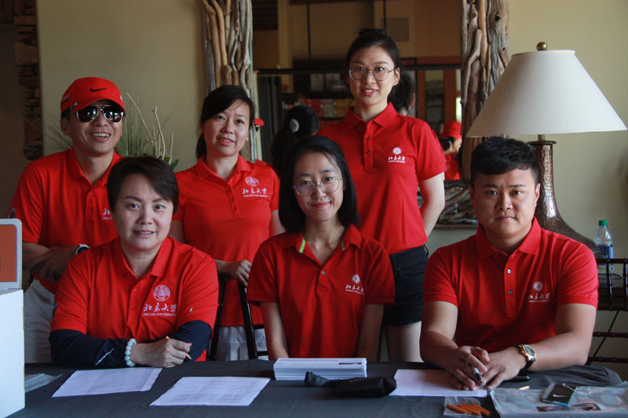
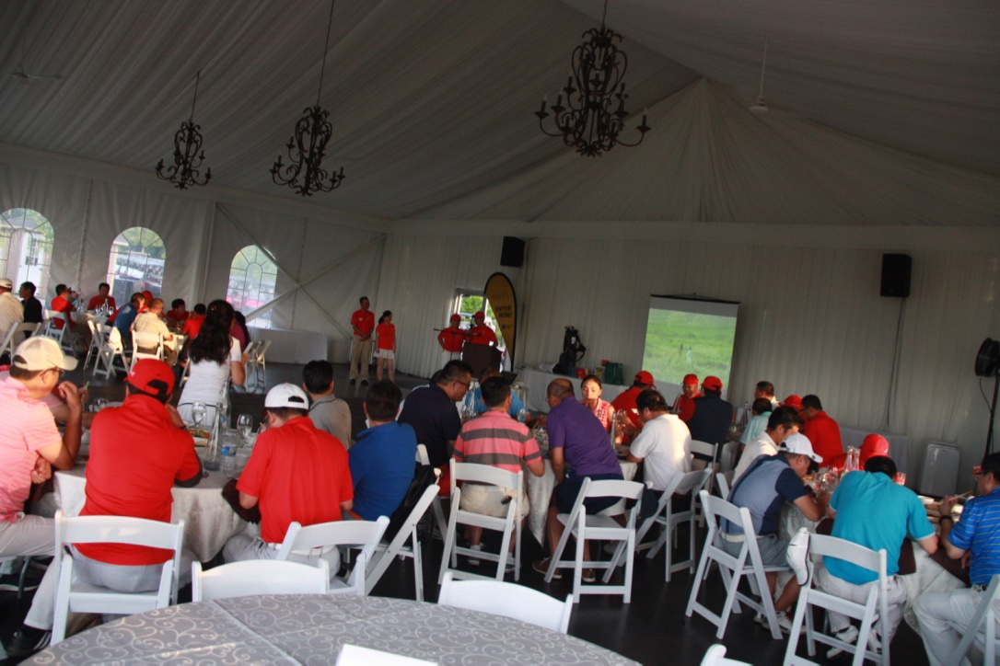
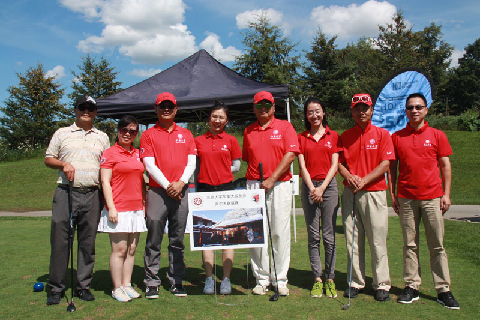
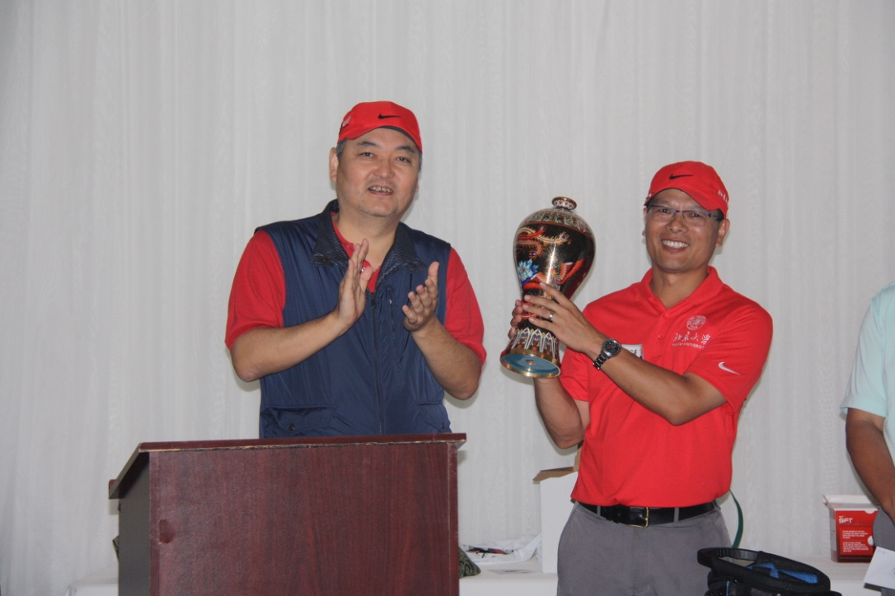

| 第三届北京大学加拿大校友高尔夫杯在Cardinal球场隆重举行 |
|
八月 13, 2017
8月13号，周日，  今年是第三届，前两届的北大杯冠军得主分别是王富、邓集锋校友。 第三届冠军：来自北大88级考古系的李中法同学。 主题赞助： Cardinal 球场 LH集团 Lalu 集团      比赛以后同学们将在宽敞明亮的Redcrest 球场大厅聚会、共享美味中餐、见证新一届冠军的产生、 同时在北大杯比赛里，  比赛具体信息： 1、比赛名称：北大杯-2017 2、比赛场地：Cardinal 的 Redcrest 球场 3、比赛时间：8月13号，周日，12点开始 4、参赛费用：全包$110，含打球、晚宴等。只参加晚宴$ 5、活动网站：pkugolf.ca 6、活动负责：邓集锋、邓颂、李中法、李建华 
|